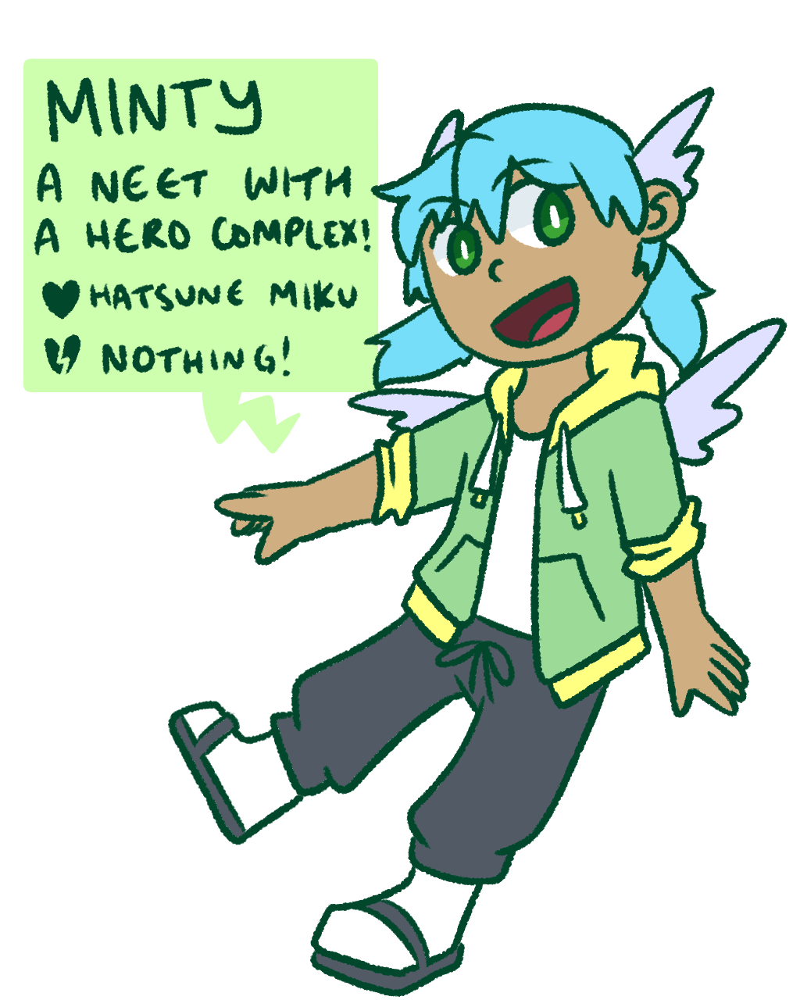

The world is ending! ...naturally, a hero must rise!
Local chuunibyou Minty leaves the house to get her hands on some sick anime merch marked down for an unbelievable price. She learns that the reason for the discount is the impending "end of the world," which just so happens to land on her birthday. Minty decides to take it upon herself to befriend everyone around her and invite them to a birthday bash the world will never forget.
Mintyverse is a working title for a small narrative project I'm putting together. I intend for the final product to be a game with the same energy as titles such as 1bitheart and Undertale (and also WarioWare...kinda). There isn't a lot of worldbuilding compared to my other project (Bolt from the Blue), but the "modern" setting has given me the space to bring more of my own personal feelings and experiences into the story.
